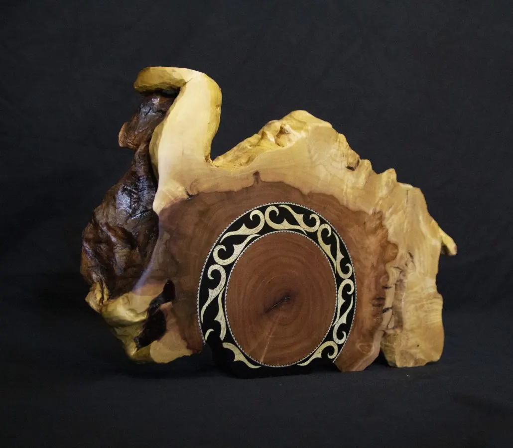
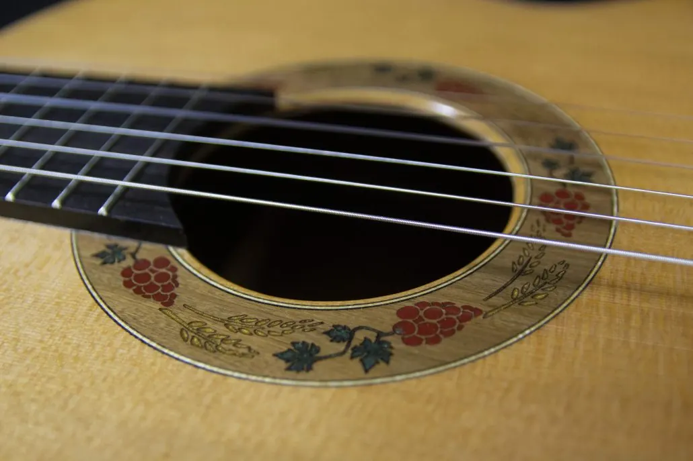

Homo Faber: La excelencia de la artesanía y su conexión con el lujo
La artesanía es mucho más que un oficio; es una expresión cultural, un legado vivo que se transmite de generación en generación. En este contexto, Homo Faber, iniciativa de la Michelangelo Foundation, se ha consolidado como el escenario perfecto para destacar la artesanía de excelencia en Europa y el mundo. Su misión es clara: preservar, promover y celebrar las habilidades de los mejores artesanos, otorgándoles el reconocimiento que merecen.
Para artesanos como Vael de Ginés, cuya filosofía se basa en crear piezas únicas que combinan tradición, innovación y lujo, ser parte de Homo Faber representa un sueño y una validación profesional.
La importancia de Homo Faber en el mundo de la artesanía
Homo Faber no es solo una lista, es una declaración de intenciones. Ser seleccionado implica que el trabajo de un artesano no solo alcanza un nivel técnico excepcional, sino que también refleja un profundo respeto por el material, el diseño y la tradición.
¿Por qué es importante estar en Homo Faber?
- Reconocimiento internacional:
Estar en esta plataforma equivale a formar parte de una élite creativa, un grupo de maestros que redefinen el significado de la artesanía en el siglo XXI. Para un luthier como Vael de Ginés, esto supone una proyección global que conecta su obra con museos, galerías y coleccionistas. - Fomento del lujo artesanal:
En un mercado saturado por la producción en masa, Homo Faber apuesta por lo exclusivo y lo irrepetible. Aquí, las piezas no solo son funcionales; son verdaderas obras de arte. Esta filosofía resuena profundamente con Vael de Ginés, cuya marca está construida en torno a la idea de que cada guitarra es única, reflejando la esencia del cliente que la inspira. - Conexión con el legado cultural:
Homo Faber no solo celebra la técnica; también destaca el valor cultural de la artesanía. Cada pieza seleccionada cuenta una historia, algo que define perfectamente el trabajo de Vael de Ginés. Desde maderas locales como el jinjolero, hasta diseños simbólicos como la guitarra «Camino», sus obras hablan de raíces, espiritualidad y emociones.
Puedes leer la entrevista y el artículo de sobre Vael de Gines en Homo Faber pinchando aquí.

Vael de Ginés: Artesanía, lujo y exclusividad
La marca Vael de Ginés se ha posicionado como un referente en la creación de guitarras de lujo, donde cada pieza es única e irrepetible. Con el lema «Tu esencia es única, tu guitarra también», este luthier no solo construye instrumentos musicales, sino que crea auténticas obras de arte que combinan diseño, técnica y alma.
El lujo en la artesanía de Vael de Ginés
- Exclusividad absoluta:
Cada guitarra de Vael de Ginés es un modelo único. No se repiten diseños ni maderas, lo que convierte cada instrumento en un tesoro para su dueño. - Materiales nobles y sostenibles:
En línea con las tendencias de Homo Faber, Vael de Ginés selecciona maderas de origen responsable y, en muchos casos, con un significado personal. Por ejemplo, la guitarra «Europa» fue creada con maderas exclusivamente europeas para reflejar un compromiso con la sostenibilidad. - Simbolismo y personalización:
Las guitarras de Vael de Ginés no son meros instrumentos; son extensiones de sus dueños. La guitarra «Camino», con su roseta de trigo y uvas, es un homenaje al pan y el vino, mientras que «Paloma» integra materiales como ámbar, ópalo y pan de oro, elevando la guitarra al nivel de joyería de alta gama.

Artesanía y lujo: una combinación atemporal
El lujo no se define solo por el precio, sino por la historia, la dedicación y la pasión detrás de cada creación. En el caso de Vael de Ginés, cada guitarra encarna el espíritu de la artesanía tradicional, enriquecido por el deseo de innovar y ofrecer algo verdaderamente único.
Homo Faber se alinea con esta visión, destacando a los artesanos que van más allá de lo común para crear piezas que trascienden el tiempo. Para una marca como Vael de Ginés, formar parte de esta plataforma sería una validación de su compromiso con la excelencia y la exclusividad.
El futuro de la artesanía en el lujo
En un mundo cada vez más industrializado, la artesanía de lujo como la de Vael de Ginés y las piezas destacadas en Homo Faber nos recuerdan la importancia de lo hecho a mano. Estos objetos no solo son bellos; tienen alma, cuentan historias y conectan a las personas con algo más grande: la herencia cultural, el arte y la humanidad.
Para Vael de Ginés, la posibilidad de entrar en Homo Faber no solo sería un reconocimiento, sino un paso hacia un futuro en el que la artesanía, el lujo y la sostenibilidad caminan de la mano, dejando un legado que trasciende generaciones.

Luthier artesanal en Los Alcázares (Murcia). Construye guitarras personalizadas e instrumentos de folclore en Vael de Ginés.